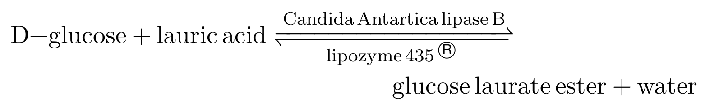
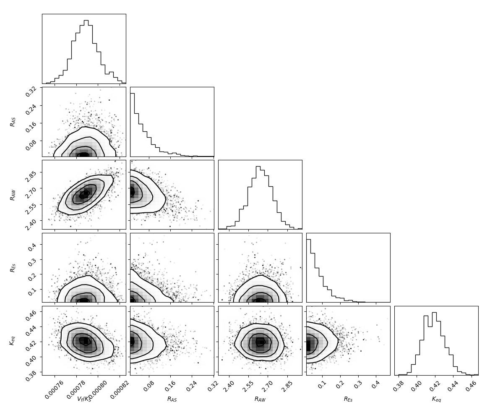
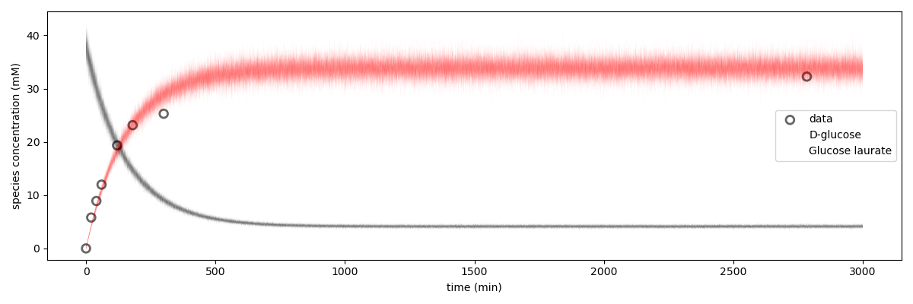

A model for the enzymatic esterification of D-glucose and Lauric acid¶
This tutorial is based on: Tijs W. Alleman. (2019). Model-Based Analysis of Enzymatic Reactions in Continuous Flow Reactors (unpublished master’s thesis). Ghent University, Ghent, BE.
Introduction¶
Sugar fatty acid esters (SFAEs) are nonionic surfactants which play an important role in the food, detergent, agricultural, cosmetic and pharmaceutical industry. Because of several inherent merits and green character, the development of an enzymatic process is preferred over traditional chemical synthesis. The combination of high conversion rates per volume unit, ease of scale-up by numbering-up and inherent stability of lipases motivate the choice to synthesise SFAEs in continuous flow reactors packed with immobilised lipase. As a model reaction, the esterification of D-glucose and Lauric acid, performed in t-Butanol at 50 degrees Celcius and yielding Glucose Laurate Ester and water as products, is used.

The goal of this tutorial is to demonstrate how pySODM can be used to build a virtual prototype of a continuous flow reactor reactor packed with enzyme beads. First, an enzyme kinetic model is calibrated to time course data obtained in batch experiments. The calibrated kinetics can then be used to make predictions on how the yields in our continuous-flow reactor vary when the flow rate is varied. Further, we can asses what happens to the reaction yields if we set up a two-stage reactor where water is removed between the stages. I will attempt to provide a brief introduction to each of the models used in this tutorial. However, I shall cut several corners for the sake of shortening this demo (my master’s thesis is over 60 pages long).
In this tutorial pySODM is used to:
Build an ODE model to describe the reaction course in a batch experiment.
Calibrate the ODE model to timecourse data from eight experiments. Each experiment has a different intial condition, which must be provided to the log posterior probability function.
Demonstrate how a 1D packed-bed reactor (PDE) can be implemented in pySODM by using the method-of-lines.
Propagate the posterior distributions of the kinetic parameters through the packed-bed reactor model and asses what happens if we change the flow rate or remove water.
Calibration of Intrinsic kinetics (ODE model)¶
Multiple batch experiments were performed. For each experiment a supersaturated solution of D-glucose and Lauric acid in t-Butanol had to be prepared. First, as much water as possible had to be removed from the t-Butanol by means of molecular sieves. Then, because of its low solubility in t-Butanol, a supersaturated solution of D-glucose had to be prepared by reflux boiling overnight. Next, the Lauric acid was added and the mixture was transferred to a 50 mL flask suspended in an oil bath kept at 50 degrees Celcius. To start the reaction, 10 g/L of beads containing the enzyme were added to the mixture. The mixture was stirred with a magnetic stirrer throughout the reaction to avoid mass transfer limitations during the reaction course. Samples were withdrawn at regular intervals and analyzed for Glucose Laurate Ester using an HPLC-MS.
The experiments performed could be subdivided into two types:
Initial rate experiments: The reaction course is only followed during the first minutes when very little product are formed.
Full time-course experiments. In this experiment, samples are withdrawn every few hours until the reaction mixture equillibrates.
Typically, the parameters of the forward reaction are first calibrated to the initial rate experiment data. During my master’s thesis, model selection was performed as well using the initial rate experiment data. The parameters of the backward reaction were then calibrated to the full time-course experiments. For the sake of brevity, I shall glance over this two-step calibration and model selection. We will simply calibrate the following model,
where,
to data from three initial rate experiments, and five full time-course experiments. In the equation, \([S]\) denotes the concentration of D-glucose, \([A]\) denotes the concentration of Lauric Acid, \([Es]\) denotes the concentration of Glucose Laurate Ester, and \([W]\) denotes the concentration of water, all in millimolar (mM). The parameters \(R_{AS}\), \(R_{AW}\) and \(R_{Es}\) can be interpreted as inhibitory constants due to their appearance in the denominator of the rate equation. \(V_f/K_S\) is typically treated as one parameter and has an impact on the initial reaction rate. \(K_{eq}\) is the equillibrium coefficient, which determines if the reaction favor the reactants or the products.
We’ll start by making a file models.py in our working directory, where we’ll group our models for this tutorial. Coding up the equations above is very similar to the simple SIR model.
from pySODM.models.base import ODEModel
class PPBB_model(ODEModel):
"""
A model for the enzymatic esterification conversion of D-Glucose and Lauric acid into Glucose Laurate Ester and water
S + A <--> Es + W
"""
state_names = ['S','A','Es','W']
parameter_names = ['c_enzyme', 'Vf_Ks', 'R_AS', 'R_AW', 'R_Es', 'K_eq']
@staticmethod
def integrate(t, S, A, Es, W, c_enzyme, Vf_Ks, R_AS, R_AW, R_Es, K_eq):
# Calculate rate
v = c_enzyme*(Vf_Ks*(S*A - (1/K_eq)*Es*W)/(A + R_AS*S + R_AW*W + R_Es*Es))
return -v, -v, v, v
We’ll then procede by making a file calibrate_intrinsic_kinetics.py in the working directory, where we’ll load and initialize this model as follows,
# Import the model from models.py
from models import PPBB_model
# Define model parameters
params={'c_enzyme': 10, 'Vf_Ks': 1.03/1000, 'R_AS': 1.90, 'R_AW': 2.58, # Forward
'R_Es': 0.57, 'K_eq': 0.89} # Backward
# Define initial condition
init_states = {'S': 46, 'A': 61, 'W': 37, 'Es': 0}
# Initialize model
model = PPBB_model(init_states,params)
The next step is loading the experimental data from the ~/tutorials/enzyme_kinetics/data folder and setting up our log posterior probability function for optimization. The data have the following structure,
df = pd.read_csv(os.path.join(os.path.dirname(__file__),'data/exp_1.csv'), index_col=0)
print(df)
S A W Es sigma
time
0 45.96 60.99 36.92 0.00 0.46
20 NaN NaN NaN 1.99 0.44
40 NaN NaN NaN 6.10 0.40
60 NaN NaN NaN 7.59 0.38
90 NaN NaN NaN 10.68 0.35
120 NaN NaN NaN 14.22 0.32
180 NaN NaN NaN 17.56 0.28
240 NaN NaN NaN 17.67 0.28
360 NaN NaN NaN 19.51 0.26
1440 NaN NaN NaN 21.02 0.25
We’ll load the datasets using a for statement and immediately extract three inputs to our log posterior probability function: 1) The Glucose Laurate Ester data in data, 2) the measurement error as the arguments of our log likelihood function log_likelihood_fnc_args and 3) the initial concentrations used in the experiment in initial_states. We will also construct the list of model states to match our datasets to (states) and we’ll use a Gaussian log likelihood function for every dataset because we have a measurement error for every datapoint. There is thus no need to analyze the mean-variance ratio as we did in the simple SIR tutorial.
from pySODM.optimization.objective_functions import ll_gaussian
# Extract and sort the names
names = os.listdir(os.path.join(os.path.dirname(__file__),'data/'))
names.sort()
# Load data
data = []
log_likelihood_fnc_args = []
initial_concentrations=[]
states = []
log_likelihood_fnc = []
for name in names:
df = pd.read_csv(os.path.join(os.path.dirname(__file__),'data/'+name), index_col=0)
data.append(df['Es'])
log_likelihood_fnc.append(ll_gaussian)
log_likelihood_fnc_args.append(df['sigma'])
states.append('Es')
initial_concentrations.append(
{'S': df.loc[0]['S'], 'A': df.loc[0]['A'], 'Es': df.loc[0]['Es'], 'W': df.loc[0]['W']}
)
All we need to to still is define a list containing the five model parameters we’d like to calibrate: \(V_f/K_S\), \(R_{AS}\), \(R_{AW}\),\(R_{Es}\), \(K_{eq}\), and a list containing an upper and lower bound for every model parameter. We’ll use the optional argument labels so our MCMC diagnostic figures can use fancy \(\LaTeX\) labels. Note how we didn’t define weights to our dataset, so all datasets are weighted equally. We also didn’t define prior probability functions for our parameters, this means pySODM will automatically use uniform priors using the provided bounds. For a detailed description of the log_posterior_probability function, visit the Optimization section in the User Guide.
from pySODM.optimization.objective_functions import log_posterior_probability
if __name__ == '__main__':
# Calibated parameters and bounds
pars = ['Vf_Ks', 'R_AS', 'R_AW', 'R_Es', 'K_eq']
labels = ['$V_f/K_S$','$R_{AS}$','$R_{AW}$','$R_{Es}$', '$K_{eq}$']
bounds = [(1e-5,1e-2), (1e-2,10), (1e-2,10), (1e-2,10), (1e-2,2)]
# Setup objective function (no priors --> uniform priors based on bounds)
objective_function = log_posterior_probability(model, pars, bounds, data, states, log_likelihood_fnc, log_likelihood_fnc_args, initial_states=initial_states, labels=labels)
Now, it is possible to find the set of parameters that maximizes the posterior probability. Given how we don’t have a good initial guess as the values of our parameters, we’ll use a Particle Swarm Optimization (PSO) to scan the parameter space for a global minimum. We’ll run the PSO for 30 iterations, then, we’ll switch to a local Nelder-Mead minimization to refine the estimate further.
from pySODM.optimization import pso, nelder_mead
if __name__ == '__main__':
# Settings
processes = 2
n_pso = 30
multiplier_pso = 10
# PSO
theta = pso.optimize(objective_function, swarmsize=multiplier_pso*processes, max_iter=n_pso, processes=processes, debug=True)[0]
# Nelder-mead
step = len(theta)*[0.05,]
theta = nelder_mead.optimize(objective_function, theta, step, processes=processes, max_iter=n_pso)[0]
We find the following estimates for our parameters:
theta = [6.46e-04, 1.75e-02, 1.81e+00, 2.27e-01, 1.09e+00]
Next, we’ll use this estimate to initiate our Markov-Chain Monte-Carlo sampler. If anything is unclear in what follows, I highly recommend going through the documentation of perturbate_theta, run_EnsembleSampler and emcee_sampler_to_dictionary available in the User Guide. We’ll initiate multiplier_mcmc chains per calibrated parameter, so 25 chains in total. To do so, we’ll first use perturbate_theta to generate a np.ndarray pos of shape (5, 25), which we’ll then pass on to run_EnsembleSampler.
if __name__ == '__main__':
from pySODM.optimization.mcmc import perturbate_theta
# MCMC settings
multiplier_mcmc = 5
# Perturbate previously obtained estimate
ndim, nwalkers, pos = perturbate_theta(theta, pert=0.10*np.ones(len(theta)), multiplier=multiplier_mcmc, bounds=bounds)
Then, we’ll setup and run the sampler until the chains converge. We’ll run the sampler for n_mcmc=500 iterations and print the diagnostic autocorrelation and trace plots every print_n=20 iterations in a folder called sampler_output/. For convenience, we’ll save the samples there as well. As an identifier for our “experiment”, we’ll use 'username'. While the sampler is running, have a look in the sampler_output/ folder, which should look as follows,
if __name__ == '__main__':
from pySODM.optimization.mcmc import run_EnsembleSampler
# Additional settings
n_mcmc = 500
print_n = 20
samples_path='sampler_output/'
fig_path='sampler_output/'
identifier = 'username'
# Write some usefull settings to a pickle file (no pd.Timestamps or np.arrays allowed!)
settings={'start_calibration': 0, 'end_calibration': 3000,
'n_chains': nwalkers, 'starting_estimate': list(theta), 'labels': labels}
# Sample n_mcmc iterations
sampler = run_EnsembleSampler(pos, n_mcmc, identifier, objective_function,
fig_path=fig_path, samples_path=samples_path, print_n=print_n, backend=None, processes=processes, progress=True,
settings_dict=settings)
├── sampler_output
| |── username_BACKEND_2022-12-16.hdf5
│ ├── autocorrelation
│ └── username_AUTOCORR_2022-12-16.pdf
│ └── traceplots
│ └── username_TRACE_2022-12-16.pdf
The output of the above procedure yields an emcee.EnsembleSampler object containing our 100 iterations for 25 chains. We can extract the chains quite easily as follows: emcee.EnsembleSampler.get_chain() (see the emcee documentation). However, we’re interested in building a dictionary of samples because this interfaces nicely to pySODM’s draw functions. To that end, we can use the builtin method emcee_sampler_to_dictionary. We’ll then use corner to visualize the distributions of the five calibrated parameters.
if __name__ == '__main__':
import corner
from pySODM.optimization.mcmc import emcee_sampler_to_dictionary
# Generate a sample dictionary and save it as .json for long-term storage
samples_dict = emcee_sampler_to_dictionary(samples_path, identifier, discard=50)
# Look at the resulting distributions in a cornerplot
CORNER_KWARGS = dict(smooth=0.90,title_fmt=".2E")
fig = corner.corner(sampler.get_chain(discard=discard, thin=2, flat=True), labels=labels, **CORNER_KWARGS)
for idx,ax in enumerate(fig.get_axes()):
ax.grid(False)
plt.show()
plt.close()
On the cornerplot we can see that the values of \(R_{AS}\) are quite small, meaning we can likely drop \(R_{AS}\) from the model without taking a big hit in terms of goodness-of-fit. \(R_{AW}\) and \(V_f / K_S\) correlate quite strongly.

Finally, we can use the draw functions to propagate the parameter samples in our model and asses the goodness-of-fit (see the simple SIR tutorial). Simulating a model is performed using the sim function (see the simple SIR tutorial and the documentation). All that is left after simulating the model is to add the observational noise to the model predictions. I’ve computed the relative magnitude of the error on the datapoints and these are roughly equal to 5%. Given how we’ve used a Gaussian log likelihood, we’ll use add_gaussian_noise to add 5% (relative) noise.
if __name__ == '__main__':
def draw_fcn(param_dict, samples_dict):
# Always draw correlated samples at the SAME INDEX!
idx, param_dict['Vf_Ks'] = random.choice(list(enumerate(samples_dict['Vf_Ks'])))
param_dict['R_AS'] = samples_dict['R_AS'][idx]
param_dict['R_AW'] = samples_dict['R_AW'][idx]
param_dict['R_Es'] = samples_dict['R_Es'][idx]
param_dict['K_eq'] = samples_dict['K_eq'][idx]
return param_dict
# Loop over datasets
for i,df in enumerate(data):
# Update initial condition
model.initial_states.update(initial_states[i])
# Simulate model
out = model.sim(3000, N=N, draw_function=draw_fcn, samples=samples_dict)
# Add 5% observational noise
out = add_gaussian_noise(out, 0.05, relative=True)
# Visualize
fig,ax=plt.subplots(figsize=(12,4))
ax.scatter(df.index, df.values, color='black', alpha=0.6, linestyle='None', facecolors='none', s=60, linewidth=2)
for i in range(N):
ax.plot(out['time'], out['S'].isel(draws=i), color='black', alpha=0.03, linewidth=0.2)
ax.plot(out['time'], out['Es'].isel(draws=i), color='red', alpha=0.03, linewidth=0.2)
#ax.errorbar(df.index, df.values, yerr=log_likelihood_fnc_args[i], fmt='x', color='black')
ax.legend(['data', 'D-glucose', 'Glucose laurate'])
ax.set_ylabel('species concentration (mM)')
ax.set_xlabel('time (min)')
ax.grid(False)
plt.tight_layout()
plt.show()
plt.close()
The following figure shows the goodness-of-fit of the model to the time course of a reaction started with 38 mM D-glucose, 464 mM Lauric acid and 24 mM water present in the medium. After 16 hours, the reaction has equillibrated and \(34 \pm 2\ mM\) (95% CI) of Glucose Laurate ester is formed, meaning the reaction has a yield of \(89\% \pm 5\%\ mM\) (95% CI). For this enzymatic reaction, higher acid-to-sugar ratios and lower initial water concentrations lead to the highest yields.
